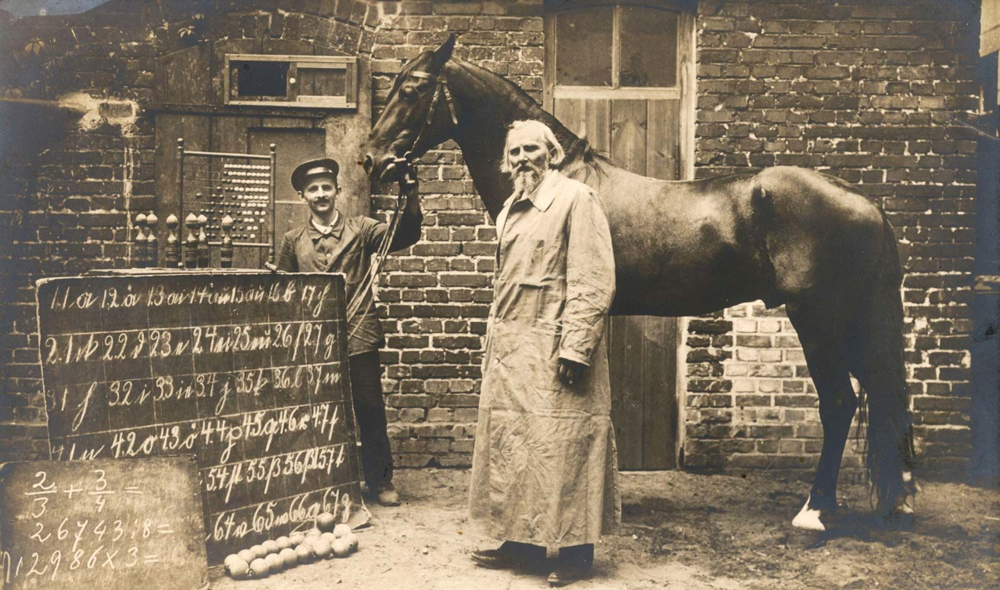

Bhavdeep Singh Sachdeva
CTO @ Stealth Startup | Previously Software Engineer @ AWS Security Services | AI Researcher
M.S. Computer Science, Arizona State University
bhavdeepsachdeva@gmail.com | scholar.google.com | linkedin.com/in/bssachde
Section 1
The Foundation
Language Models & the Transformer Architecture
What is language modeling? How did we get to GPT, Llama, and Claude? What's actually inside?
What Is Language Modeling?
Learning to distinguish probable sequences from improbable ones.
The dominant approach today: predict the next token given all previous tokens. This powers GPT, Llama, Claude, and Gemini.
The History
| Era | Approach | Example |
|---|---|---|
| 1990s | N-gram models | Bigram/trigram counts |
| 2013 | Neural LMs | Word2Vec, NNLM |
| 2015-17 | RNN/LSTM LMs | ELMo |
| 2017+ | Transformers | BERT, GPT, Llama |
What "Large" Means Today
| Model | Params | Lab |
|---|---|---|
| BERT (2018) | 340M | |
| GPT-3 (2020) | 175B | OpenAI |
| Llama 3 (2024) | 405B | Meta |
| GPT-4 (2023) | ~1.8T (MoE) | OpenAI |
| Claude 3.5 (2024) | undisclosed | Anthropic |
| Gemini (2024) | undisclosed |
Shannon, 1948, "A Mathematical Theory of Communication" | Bengio et al., 2003, "A Neural Probabilistic Language Model" | Mikolov et al., 2010
Large Language Models Today
All modern LLMs share one core design: a Transformer trained on next-token prediction at massive scale.
Vaswani et al., 2017 | Devlin et al., 2018 (BERT) | Radford et al., 2018 (GPT) | Touvron et al., 2023 (Llama) | Raffel et al., 2019 (T5)
The Core Task: Next-Token Prediction
Given all tokens so far, output a probability distribution over the entire vocabulary (~50K-100K+ tokens).
Radford et al., 2018 (GPT-1) | Brown et al., 2020 (GPT-3) | This is the foundation ALL modern LLMs share
To Predict Well, You Need Three Things
The Transformer solves next-token prediction through a pipeline of three learned operations:
Vaswani et al., 2017, "Attention Is All You Need," arXiv:1706.03762 - introduced all three components in one architecture
Step 1: Embeddings - Words Become Vectors
Each token is mapped to a vector in high-dimensional space. Direction and magnitude encode meaning.
Mikolov et al., 2013, "Efficient Estimation of Word Representations in Vector Space," arXiv:1301.3781 | Pennington et al., 2014, "GloVe"
Static to Contextual Embeddings
Problem
"I sat by the river bank" = terrain
"I went to the bank to deposit" = financial
Word2Vec: same vector for both. Wrong.
Solution: Attention
Each word looks at surrounding words to adapt its vector to context.
Transformers do this in parallel for all tokens at once.
| Method | Year | Context? | Speed |
|---|---|---|---|
| Word2Vec / GloVe | 2013-14 | No (static) | Fast |
| ELMo (BiLSTM) | 2018 | Yes (contextual) | Slow (sequential) |
| Transformer | 2017+ | Yes (contextual) | Fast (parallel) |
Peters et al., 2018, "ELMo" | Devlin et al., 2018, "BERT" | Vaswani et al., 2017
Step 2: Attention - The Q, K, V Mechanism
For each token, compute: "Which other tokens are relevant to me? How much should I listen to each?"
Vaswani et al., 2017, arXiv:1706.03762 | Intuition credit: 3Blue1Brown, "Attention in transformers, step-by-step" (2024)
Multi-Head Attention
One attention head captures ONE relationship type. Multiple heads = multiple perspectives simultaneously.
Vaswani et al., 2017 | Clark et al., 2019, "What Does BERT Look At?" arXiv:1906.04341 | Voita et al., 2019, ACL
Step 3: MLP Layers - The Knowledge Store
Attention = routing
"Which tokens should talk to which?"
MLP = content
"What factual knowledge to apply?"
W1 detects patterns ("keys")
W2 outputs info ("values")
~66% of GPT-3's 175B params are in MLPs.
Attention = telephone switchboard
MLP = the conversations themselves
Example: "Kobe Bryant" triggers stored knowledge

The GOAT - stored in MLP weights
- Knowledge Neurons fire for "Kobe" and retrieve: Lakers, 81 points, 5 rings, Mamba Mentality
- Fact editing - modify MLP weights = model changes its answers about any entity
Geva et al., 2021, "Transformer FFN Layers Are Key-Value Memories," EMNLP, arXiv:2012.14913 | Dai et al., 2022, "Knowledge Neurons," ACL, arXiv:2104.08696 | Image: Wikimedia Commons
The Original Transformer Architecture
Vaswani et al., 2017 - the paper that started it all. Two stacks: Encoder (understands input) + Decoder (generates output).
Vaswani et al., 2017, "Attention Is All You Need," arXiv:1706.03762, Figure 1 | Original used for machine translation (English to German/French)
Transformers Won - But Have Fundamental Limits
Why they dominate
- Fully parallelizable (100x vs. RNNs)
- O(1) path between any two tokens
- Scales predictably (power laws)
- One design = GPT, BERT, Llama, Claude
What they cannot do
- Cannot plan (Kambhampati, ICML 2024)
- Cannot self-verify outputs
- No world model (LeCun, 2024)
- O(n^2) memory limits context
LeCun: "Current LLMs lack the ability to understand the physical world, remember, reason, and plan."
But in 2017-2018, the problem was even more basic: these early Transformers couldn't reliably answer a factual question, summarize a paragraph, or follow a simple instruction. The architecture was right — it just needed scale.
Kambhampati, 2024, "LLMs Can't Plan," ICML, arXiv:2402.01817 | LeCun, 2024, Harvard Ding Shum Lecture
Section 2
Scaling
The GPT Story & The Science of "Bigger"
How did 117M parameters become 1.8 trillion? What laws govern scaling? And why did a 70B model beat a 280B one?
The Pre-train + Fine-tune Paradigm (GPT-1)
GPT-1 (2018): One pre-trained model, fine-tuned to many tasks — replacing custom models built from scratch.
Radford et al., 2018, "Improving Language Understanding by Generative Pre-Training" | First decoder-only Transformer for NLP transfer
Scale Unlocks Capabilities (GPT-2 to GPT-3)
Same architecture. More parameters. Qualitatively new abilities appear.
Radford et al., 2018 (GPT-1) | Radford et al., 2019 (GPT-2) | Brown et al., 2020, arXiv:2005.14165 (GPT-3)
GPT-3's Breakthrough: In-Context Learning
No fine-tuning. No gradient updates. Just examples in the prompt.
Few-Shot Prompt
Translate English to French:
sea otter = loutre de mer
cheese = fromage
plaid shirt =Output: "chemise a carreaux" (correct!)
Model learns the pattern from examples in real-time.
Three Evaluation Modes
| Mode | What's given | Quality |
|---|---|---|
| Zero-shot | Task description only | Inconsistent |
| One-shot | 1 example | Much better |
| Few-shot | 10-100 examples | Near fine-tuned |
Brown et al., 2020, "Language Models are Few-Shot Learners," arXiv:2005.14165 | Cost: ~$4.6M to train (2020 estimate)
Scaling Laws - The Science of "Bigger"
Performance follows smooth power-law relationships with model size, data, and compute.
Kaplan et al., 2020, "Scaling Laws for Neural Language Models," arXiv:2001.08361
The Chinchilla Moment — Smarter Scaling
DeepMind showed the industry was building models too large and training them too little. Then Meta flipped the script.
Hoffmann et al., 2022, "Training Compute-Optimal LLMs," arXiv:2203.15556 | Touvron et al., 2023 (Llama) | Meta, 2024, "The Llama 3 Herd of Models"
The Missing Link: Instruction-Tuning
Scale gave us capable models. But scale alone didn't make them usable.
Mishra, Arunkumar, Sachdeva, Bryan, Baral, 2020, arXiv:2005.00816 (DQI) | Mishra et al., 2021, arXiv:2104.08773 (First instruction-tuning paper) | Wang, Mishra et al., 2022, EMNLP | AI2 Lasting Impact Paper Award
Emergence: What Our Research Found
Does scale magically solve reasoning? We tested this. The answer: not yet.
Mishra, Sachdeva et al., 2022, "NumGLUE," ACL 2022 | Zhou, Mishra et al., 2024, "Self-Discover," DeepMind | Schaeffer et al., 2023, arXiv:2304.15004
Section 3
Alignment
Making Models Actually Useful
175B parameters doesn't mean helpful. How do we get models to do what users actually want?
The Alignment Problem
A model can be incredibly capable but completely unhelpful. Alignment bridges that gap.
Raw GPT-3 (175B, unaligned)
User: "What is the capital of France?"
GPT-3: "What is the capital of France?
This is a question that many students
ask in geography class. The capital
of a country is typically the city
where..." (never answers)InstructGPT (1.3B, aligned)
User: "What is the capital of France?"
InstructGPT: "The capital of France
is Paris."Dramatically more useful.
Ouyang et al., 2022, "Training Language Models to Follow Instructions," arXiv:2203.02155 | Askell et al., 2021 (HHH criteria)
The Alignment Methods Landscape (2022-2026)
From complex RL to simple classification losses. The trend: simpler training, same quality.
Bai et al., 2022 (CAI) | Rafailov 2023 (DPO) | Lee et al., 2023 (RLAIF) | Ethayarajh 2024 (KTO) | Hong et al., 2024 (ORPO)
Alignment Limitations — An Honest Assessment
RLHF/DPO make models more useful, but they do NOT solve alignment in any deep sense.

Casper et al., 2023, "Open Problems and Fundamental Limitations of RLHF," arXiv:2307.15217 | Clever Hans photo: Britannica, 1904
Section 4
Fine-Tuning
Making Models Your Own
Pre-trained models know language. Fine-tuning teaches them YOUR task, domain, and style. But how do you do it without breaking the bank?
Why Fine-Tune?
A pre-trained model is a generalist. Fine-tuning turns it into a specialist.
| What You Want | Fine-Tuning Teaches | Example |
|---|---|---|
| New format | Output structure | Always respond in JSON |
| Domain knowledge | Specialized vocabulary | Medical terminology |
| Style/tone | Generation distribution | Concise, formal, technical |
| New capability | Task patterns | Code review, SQL generation |
Mishra et al., 2023, arXiv:2306.05539 | Gupta, Mishra et al., 2023, "TarGEN," arXiv:2310.17876
The Problem with Full Fine-Tuning
Updating ALL parameters is prohibitively expensive for modern LLMs.
Aghajanyan et al., 2021, "Intrinsic Dimensionality Explains the Effectiveness of Language Model Fine-Tuning," ACL, arXiv:2012.13255
LoRA — The Intuition
Don't update the whole brain. Just add a small, focused "patch" that teaches the new skill.
Hu et al., 2021, "LoRA: Low-Rank Adaptation of Large Language Models," arXiv:2106.09685 (Microsoft)
The Real Bottleneck: Data Quality
LoRA made fine-tuning cheap and fast. Now the dominant factor is what you fine-tune ON.
Sachdeva, Mishra et al., 2022, "Is High Quality Data All We Need?" arXiv:2203.06404 | Mishra, Sachdeva, 2020, "Do We Need to Create Big Datasets to Learn a Task?," SustaiNLP | Gupta, Mishra et al., 2023, "TarGEN" | Arunkumar, Mishra, Sachdeva et al., 2023, "VAIDA," EACL